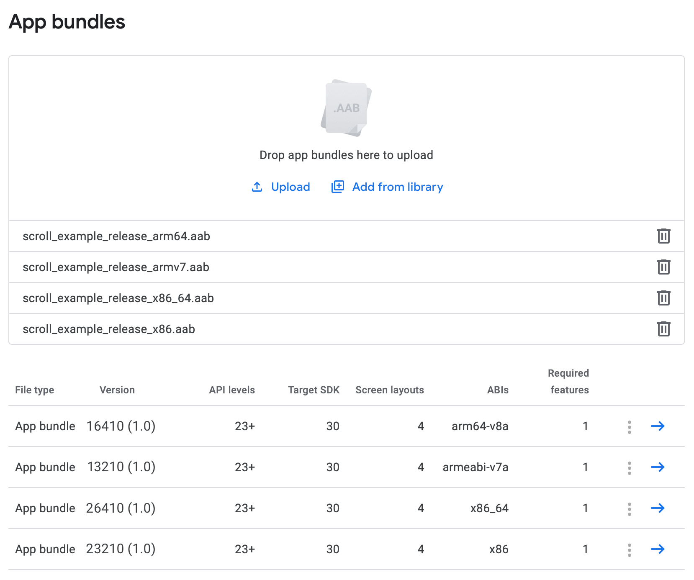

Publishing to Google Play
Qt for Android provides a complete solution to develop, build, and package your applications for Android. Most of these tasks, especially packaging and deployment, are handled by Qt Creator, providing a rich developer experience.
Every time you run the application using Qt Creator, an Android Application Package (APK) is created and deployed onto the target of your choice (device or emulator). With a few minor changes to packaging settings, you can publish your application on Google Play.
Building the App
Once your app has been developed and you want to move forward to publish it to Google Play, follow these instructions to create an .apk or .aab that can go live on Google Play:
- Open your project with Qt Creator choosing a
Release Build. - Select Projects > Build > Build Android APK > Create Templates to create the Android package template files such as
AndroidManifest.xml, which is the main file of concern here. - Check for the following settings in
AndroidManifest.xml:- Set Application name and Application icon.
- Set the app's name using
android:labelunder the manifest'sapplicationsection. - Set the app's version code and name via CMake's properties QT_ANDROID_VERSION_NAME and QT_ANDROID_VERSION_CODE. For qmake, use ANDROID_VERSION_NAME and ANDROID_VERSION_CODE. For qmake, we will use ANDROID_VERSION_CODE below, to work around publishing multi-ABIs apps.
See Qt Android Manifest File Configuration for more information.
- Set
minimumandtargetSDK versions according to your app's needs. This can be done using the CMake properties QT_ANDROID_TARGET_SDK_VERSION and QT_ANDROID_MIN_SDK_VERSION. Or forqmakeANDROID_TARGET_SDK_VERSION ANDROID_MIN_SDK_VERSION.Note: As before with Qt 5.15, you can specify these settings in the
AndroidManifest.xml. Be aware that the CMake and qmake properties mentioned above will override these if set there. See Android: App Versioning for more information on setting these inbuild.gradle. - Set up a keystore to sign your package. You can create a new keystore if you do not have one. For more information, see Signing Android Packages.
- Locate the generated package:
- For APK packages, locate the
.apkpackage at:<build_path>/android-build/build/outputs/apk/release/android-build-release.apk
Note: In Qt Creator, select Projects > Build > Build Steps > Build Android APK > Open package location after build to build the application's
.apkand open the directory containing the package. - For AAB packages, select Projects > Build > Build Steps > Build Android APK > Build .aab (Android App Bundle) for Qt Creator to generate the
.aabfile, then locate the package at:<build_path>/android-build/build/outputs/bundle/release/android-build-release.aab
- For APK packages, locate the
Uploading the App to Google Play Store
Log into the Google Play Developer Console and upload the .aab files, along with a description and screen captures resembling the usage of your application.
Multi-ABI Bundles
Uploading one .aab with all the supported architectures is enough for Qt versions that support building a multi-ABI bundle. Qt 6.7 supports building multi-ABI bundles with only with CMake. For more information, see QT_ANDROID_ABIS.
Single-ABI bundles
However, publishing your app requires additional steps for Qt versions that don't have the multi-ABI build support. qmake builds in Qt 6.7 fall into this category.
To publish your app that is built using a single ABI kit, you need to make sure that each ABI uses a different internal version code. The version code is an internal non-public identifier for your app's release. Build each one of the architectures you want to support and set a different version code for each ABI. This can be done as follows for qmake:
ANDROID_VERSION_CODE = <unique_version>
The app developer can use a specific scheme for the version code. For example, the code could have chunks for the platform, the ABI, and the actual version. Then, a sample scheme would be <Platform><ABI><AppVersion>:
- Platform:
- 1 for Arm
- 2 for Intel
- Architecture:
- 32 for 32 bit
- 64 for 64 bit
The resulting version code for release 1.0 for arm64-v8a ABI, would be 16410.
For more information, see Google's documentation on app versioning.
The following screenshot shows an example of an app targeting 4 ABIs, while each package uses a unique version code, which is different from the version name that is the public version string.

See also Deploying an Application on Android.